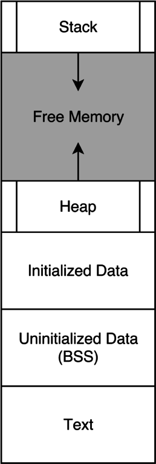

代码生成
全局变量需要保存在内存中的某个地方。它们不能被保存在栈上，因为栈可认为是一个函数的私有数据，其他函数不能进行访问。因此它们需要被保存在一块公共的内存中，即数据段（data section）。我们知道一个程序在运行时有一个自己的地址空间，并被划分为了多段内存区域，不同的段有着不同的读、写、可执行权限，下图给出了不同内存段的布局：

我们之前一直在处理的 RISC-V 指令都在代码段（text section），具有可执行权限，并且是只读的；而全局变量则在数据段（data section），一般具有可读写权限，而无可执行权限。我们可将其进一步细分为初始化、未初始化、以及只读的数据段，其中未初始化的数据段通常称为 BSS，会在程序加载时被初始化为 0；只读数据段（rodata）用于保存程序中定义的常量，在本实验中不会用到。
在编写自己的汇编码生成器之前，我们先来看看 GCC 是如何生成全局变量的代码的。
int N = 2333;
int main() {
return N;
}
使用以下命令编译出汇编代码：
$ riscv64-unknown-elf-gcc test.c -O3 -S -o test.S
$ cat test.S
.file "test.c"
.option nopic
.text
.section .text.startup,"ax",@progbits
.align 1
.globl main
.type main, @function
main:
lui a5,%hi(N)
lw a0,%lo(N)(a5)
ret
.size main, .-main
.globl N
.section .sdata,"aw"
.align 2
.type N, @object
.size N, 4
N:
.word 2333
.ident "GCC: (SiFive GCC 8.2.0-2019.05.3) 8.2.0"
全局变量定义
从上述结果中，很容易找到全局变量 N 的定义部分，去掉一些无关内容并简化后如下：
.data # 即 .section .sdata,"aw"，表示接下来是数据段，内容可写
.globl N # 让符号 N 对链接器可见
.align 2 # 接下来的数据需要 4 字节对齐
N:
.word 2333 # 在数据段分配一个字（4 字节）大小的整数，值为 2333
这里有几件事要注意：
.data指示符告诉汇编器我们在数据段。我们还需要一个.text指示符来告诉我们何时切换回代码段。- 像
N这样的标签可以标注一个内存地址。汇编器和链接器并不关心这个地址是指代码段的指令还是数据段的变量，它们会以同样的方式处理它。 .align n的意思是“下一个东西的起始地址应为 字节的倍数”。
有关 RISC-V 汇编指示符（directives）的更多内容 ，详见 https://github.com/decaf-lang/minidecaf/blob/master/doc/riscv-assembly-directives.md
在具体实现时，我们每遇到一个全局变量，就生成类似以上的代码。对于未初始化的全局变量，简单起见我们无需考虑 BSS 段，直接将其初始化为 0 即可。
对于全局变量的初值，需要在编译时就进行确定，因此其初始化器需要是一个常量表达式。为了方便，我们的测试集只包含该常量表达式是一个整数的情况，你可以无需计算表达式。
全局变量引用
从 GCC 的结果中我们也可以得到引用一个全局变量的方法：
lui a5,%hi(N) # 将 N 地址的高 20 位作为立即数加载到 a5，低 12 位设为 0
lw a0,%lo(N)(a5) # 从内存中读出数据保存到 a0，内存地址为 a5 加上 N 地址的低 12 位
注意到这里用了两条指令，而不是类似 lw a0, 0(N) 的一条，这是因为 N 在这里是个标签，其实际值是一个 32 位的地址，这超过了一条长度为 4 字节的指令的表示能力。
对于给全局变量赋值的情况也类似，只不过是把 lw 换成了 sw。